실내 실물 시험 — 시나리오별
교실·강의실 앞 복도·공터·지하주차장에서 한 실내 시험을 시나리오별로 묶었다. 11/15 강의실 옆 복도 시나리오는 휴대폰 영상으로 만든 3D 맵 위에 주행을 다시 그렸다. 카드를 누르면 실험별 상세.
2811/15 주행(저장 실수 2건 제외)
1111/13 주행
30영상 있음
11/15 · 강의실 옆 복도 시나리오 18회
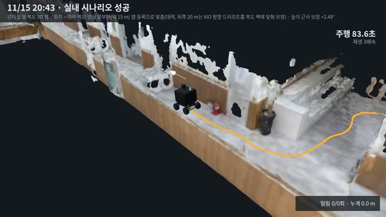
11/15 20:4311/15 20:43 · 실내 시나리오 성공35.4 m 이동 · 목표 32.0→최근접 1.8 m · 실내 시나리오 성공
 11/15 17:55
11/15 17:5511/15 17:55 · 플래닝_시나리오_중간성공20.7 m 이동 · 목표 37.5→최근접 21.6 m · 잘 가다가 마지막 장애물에서 실패했음
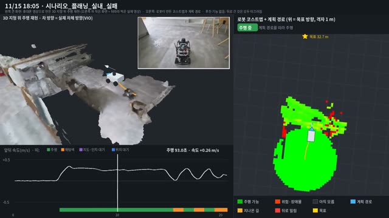
11/15 18:0511/15 18:05 · 시나리오_플래닝_실내_실패4.9 m 이동 · 목표 34.1→최근접 30.0 m · 시나리오 실내 플래닝 도중 gpp lpp 이상으로 실패
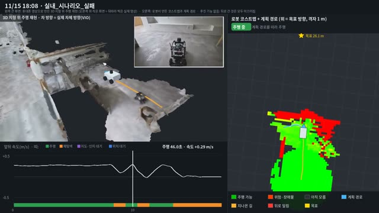
11/15 18:0811/15 18:08 · 실내_시나리오_실패4.0 m 이동 · 목표 29.1→최근접 25.4 m · 이전과 똑같이 실패
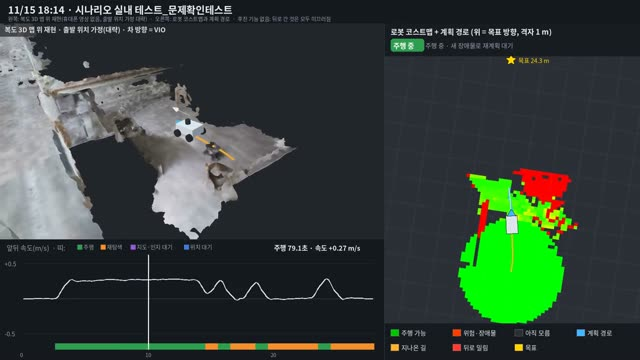
11/15 18:1411/15 18:14 · 시나리오 실내 테스트_문제확인테스트4.5 m 이동 · 목표 26.1→최근접 22.3 m · 이전 문제를 확인하기위해 테스트중
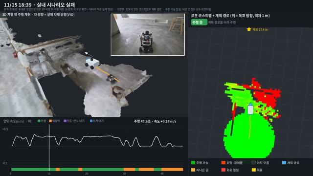
11/15 18:3911/15 18:39 · 실내 시나리오 실패8.2 m 이동 · 목표 29.6→최근접 24.9 m · 2번째 코더 벽 보고 감
 11/15 18:44
11/15 18:4411/15 18:44 · 실내 시나리오 실패 중간까지 성공20.4 m 이동 · 목표 28.3→최근접 12.3 m · 또 마지막 장애물쪽에서 실패함
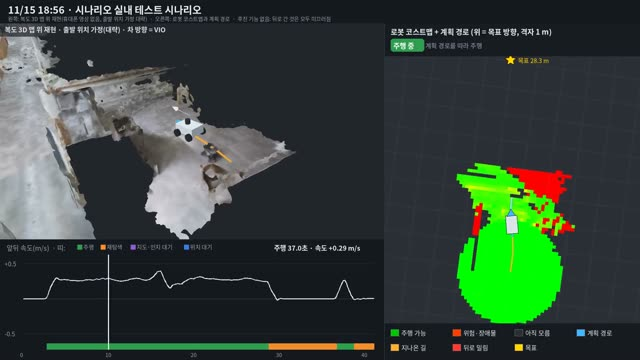
11/15 18:5611/15 18:56 · 시나리오 실내 테스트 시나리오7.6 m 이동 · 목표 30.2→최근접 25.8 m · 실패 위쪽에 알수없는 장애물 영역이 생겼따고함 경사는 문제가 아닌듯?
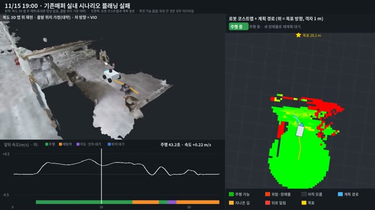
11/15 19:0011/15 19:00 · 기존매퍼 실내 시나리오 플래닝 실패3.8 m 이동 · 목표 30.0→최근접 26.5 m · 기존매퍼로 실내 시나리오 진행 실패
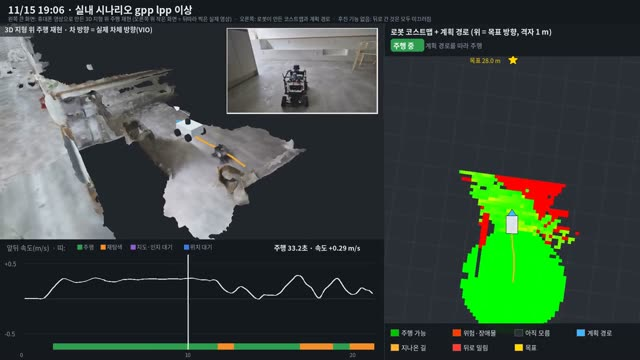
11/15 19:0611/15 19:06 · 실내 시나리오 gpp lpp 이상4.5 m 이동 · 목표 30.2→최근접 26.2 m · 문제가 있음 무언가
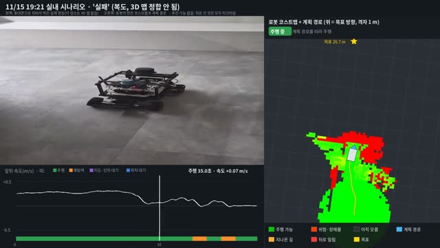
11/15 19:2111/15 19:21 · 실패4.2 m 이동 · 목표 30.0→최근접 26.3 m · 실패
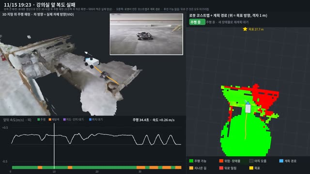
11/15 19:2311/15 19:23 · 강의실 앞 복도 실패8.5 m 이동 · 목표 30.2→최근접 25.6 m · 실패
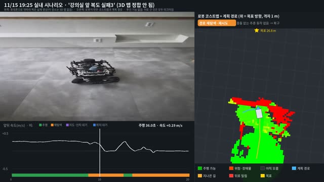
11/15 19:2511/15 19:25 · 강의실 앞 복도 실패34.2 m 이동 · 목표 30.1→최근접 26.2 m · 왜 실패..
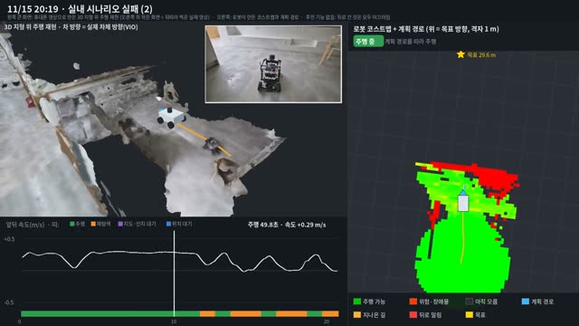
11/15 20:1911/15 20:19 · 실내 시나리오 실패 (2)5.0 m 이동 · 목표 32.1→최근접 27.7 m · 실패
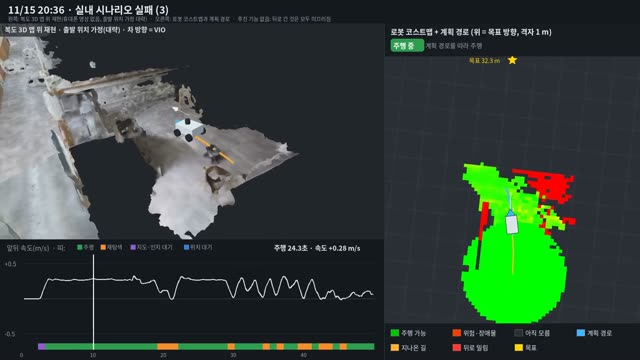
11/15 20:3611/15 20:36 · 실내 시나리오 실패 (3)9.8 m 이동 · 목표 34.1→최근접 28.0 m · 실패
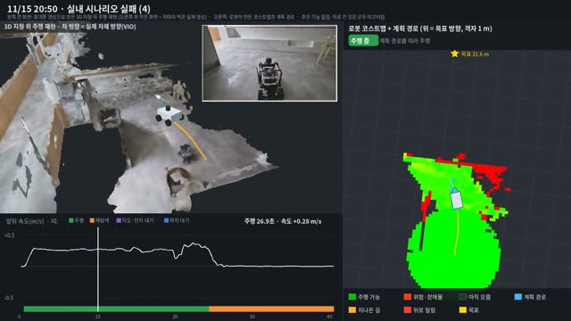
11/15 20:5011/15 20:50 · 실내 시나리오 실패 (4)6.8 m 이동 · 목표 33.9→최근접 29.1 m · 실패
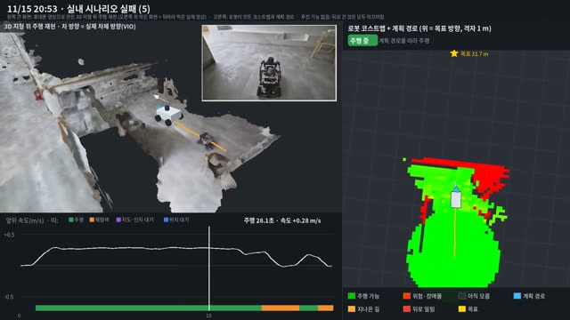
11/15 20:5311/15 20:53 · 실내 시나리오 실패 (5)3.6 m 이동 · 목표 34.2→최근접 30.7 m · 실내 시나리오 실패
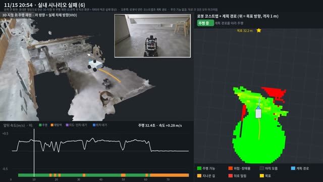
11/15 20:5411/15 20:54 · 실내 시나리오 실패 (6)15.2 m 이동 · 목표 34.2→최근접 21.9 m · 실내 시나리오 실패
11/15 · 복도 짧은 목표 시험 1회

11/15 · 교실 → 복도 / 교실 → 밖 4회
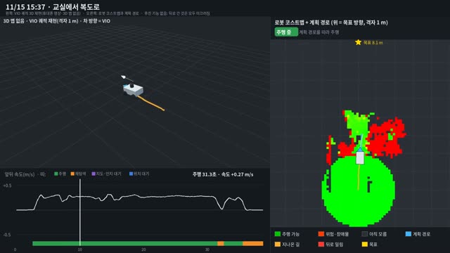
11/15 15:3711/15 15:37 · 교실에서 복도로8.5 m 이동 · 목표 9.8→최근접 1.6 m · 시험은 실패
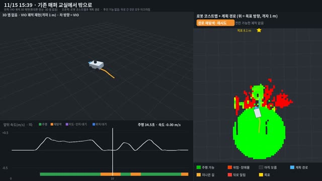
11/15 15:3911/15 15:39 · 기존 매퍼 교실에서 밖으로2.4 m 이동 · 목표 9.6→최근접 7.5 m · 실패
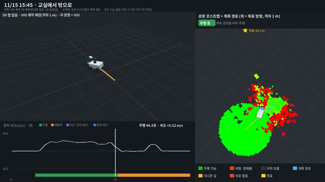
11/15 15:4511/15 15:45 · 교실에서 밖으로2.2 m 이동 · 목표 11.2→최근접 9.9 m · 교실에서 밖으로 기대햇는데 7.2m 8.6m 시작부터 실패
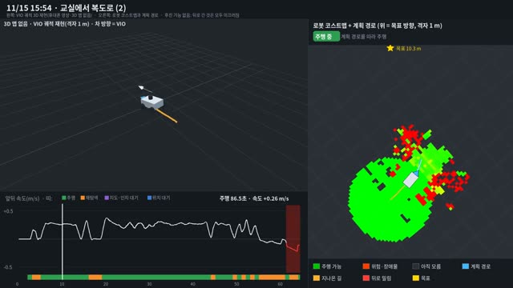
11/15 15:5411/15 15:54 · 교실에서 복도로 (2)12.9 m 이동 · 목표 11.2→최근접 3.1 m · 마지막에 좁은 코너를 통과 못함
11/15 · ㄹ자 코스·직진·야지 모델 시험 3회

11/15 · v3 매퍼 짧은 시험 2회

11/15 · 저장 실수로 남은 기록 (참고) 2회

11/13 · 교실 ㄱ자 코스 2회
11/13 · 강의실 앞 ㄱ자·ㄹ자 코스 3회
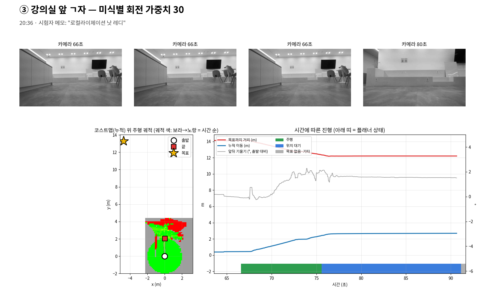
11/13 20:3611/13 20:36 · 강의실 앞 ㄱ자 — 미식별 회전 가중치 302.7 m 이동 · 목표 14.1→최근접 12.2 m · 로컬라제이션 낫 레디
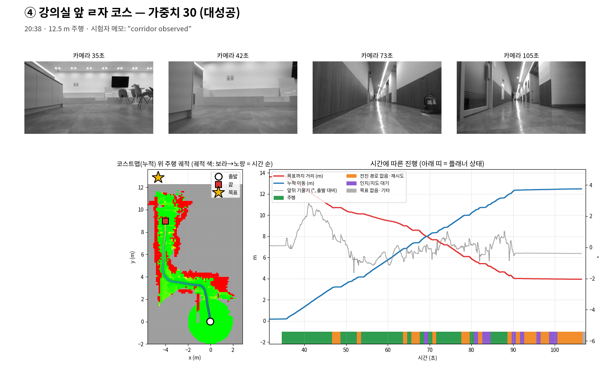
11/13 20:3811/13 20:38 · 강의실 앞 ㄹ자 코스 — 가중치 30 (대성공)12.5 m 이동 · 목표 13.7→최근접 4.0 m · corridor observed
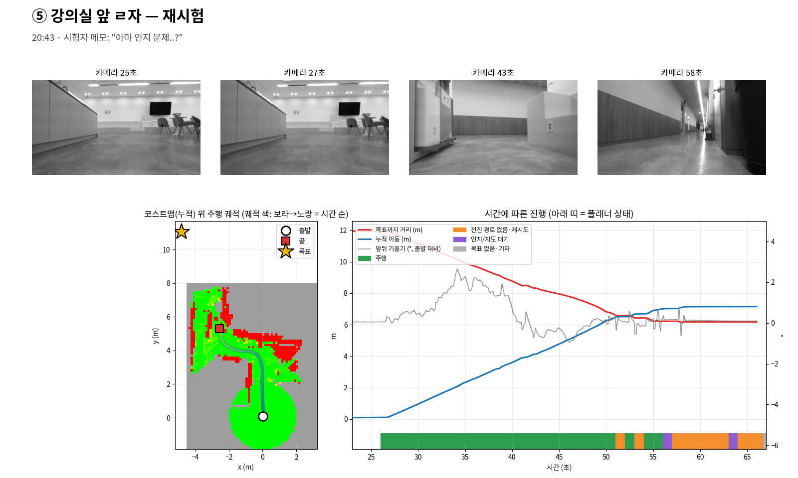
11/13 20:4311/13 20:43 · 강의실 앞 ㄹ자 — 재시험7.2 m 이동 · 목표 12.0→최근접 6.2 m · 아마 인지 문제..?
11/13 · 강의실 앞 공터 경사 판단 4회
 11/13 20:48
11/13 20:4811/13 20:48 · 강의실 앞 공터 — 경사도 판단4.6 m 이동 · 목표 2.1→최근접 1.1 m · 경사 판단 안됨..?
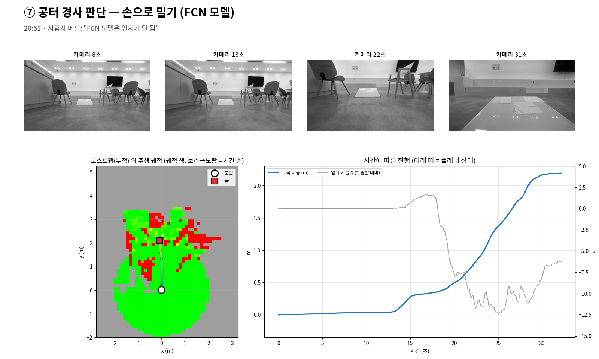
11/13 20:5111/13 20:51 · 공터 경사 판단 — 손으로 밀기 (FCN 모델)2.2 m 이동 · FCN 모델은 인지가 안 됨
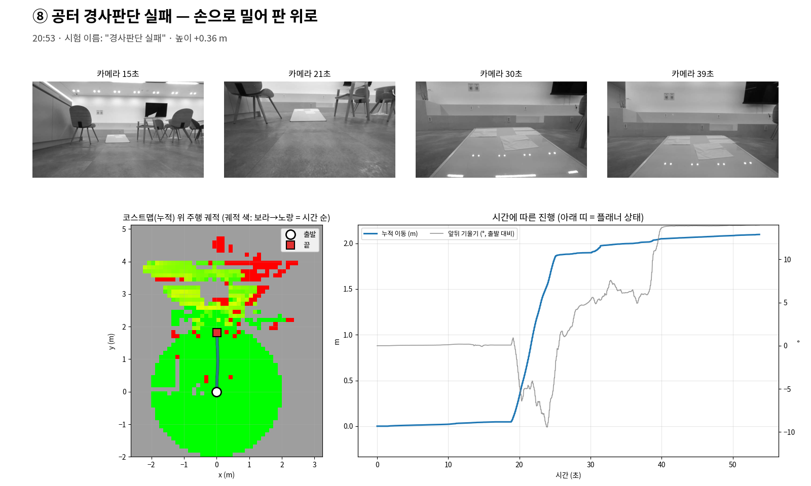
11/13 20:5311/13 20:53 · 공터 경사판단 실패 — 손으로 밀어 판 위로2.1 m 이동
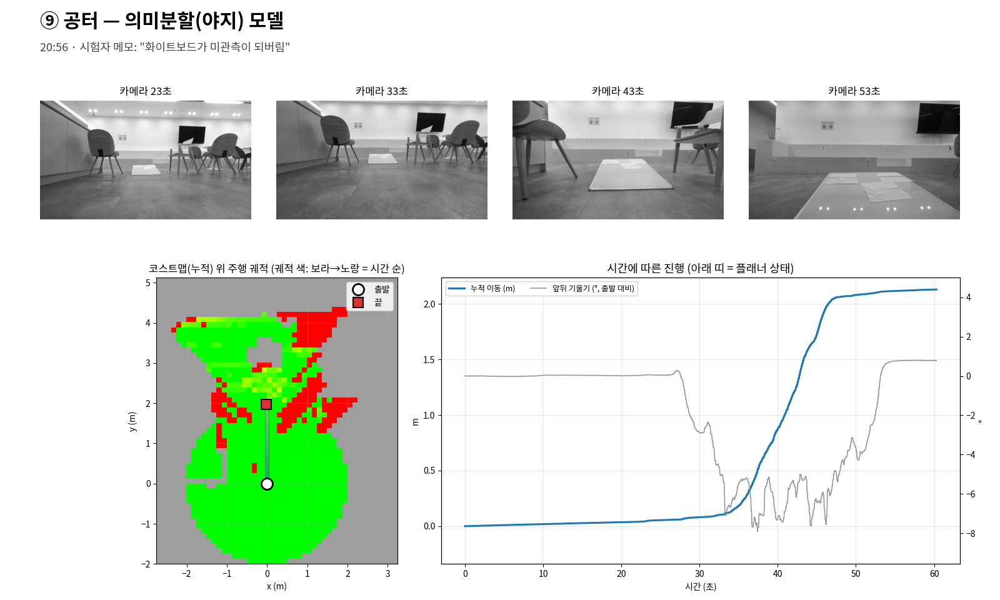
11/13 20:5611/13 20:56 · 공터 — 의미분할(야지) 모델2.1 m 이동 · 화이트보드가 미관측이 되버림
11/13 · 지하주차장 경사 오르기 2회
"저장 실수로 남은 기록"의 14:46 "아니 이거 저장할꺼아닌데", 15:03 "이것도 저장할려는거 아닌데"는 시험자가 저장 실수라고 적은 기록이라 주행 횟수에서 뺐다(참고용으로만 둠).